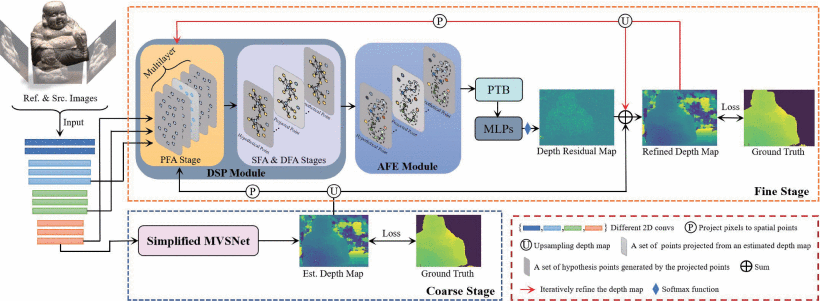

01
Field Robotics & Autonomous Navigation
Perception and planning for mobile robots navigating unstructured and complex natural environments.
Academic Homepage
Lecturer · North University of China
Taiyuan, Shanxi, China
Researching intelligent robots that can perceive, understand, and navigate complex environments.
01 / Introduction
I am currently a Lecturer at North University of China (NUC), Taiyuan, Shanxi, China. From Spring 2024 to Spring 2026, I was a Joint Postdoctoral Fellow at Tsinghua University, where my research focused on multi-agent collaborative environmental exploration and mapping. I received my M.S. and Ph.D. degrees from North University of China between 2016 and 2023, conducting research on 3D reconstruction of objects and scenes.
My research interests include field robotics and autonomous navigation, robotic world models, multi-agent exploration and mapping, and 3D reconstruction. I am particularly interested in enabling robots to perceive and reason about complex natural environments for reliable autonomous operation.
02 / Research
My work connects perception, spatial understanding, and decision-making for autonomous systems operating in challenging environments.
Perception and planning for mobile robots navigating unstructured and complex natural environments.
Spatial representations and predictive models that support environment understanding and foresight-driven planning.
Collaborative exploration, information sharing, and consistent mapping in unknown environments.
Geometric reconstruction and visual understanding of objects and 3D scenes.
03 / Selected Work
Selected peer-reviewed research. The list will be updated as new publications become available.

IEEE Transactions on Circuits and Systems for Video Technology
04 / Background
North University of China · Taiyuan, China
Tsinghua University · Beijing, China
Research on multi-agent collaborative environmental exploration and mapping.
North University of China
Research on 3D reconstruction of objects and scenes.
05 / Get in Touch
For academic inquiries, research discussions, and potential collaborations, feel free to get in touch.